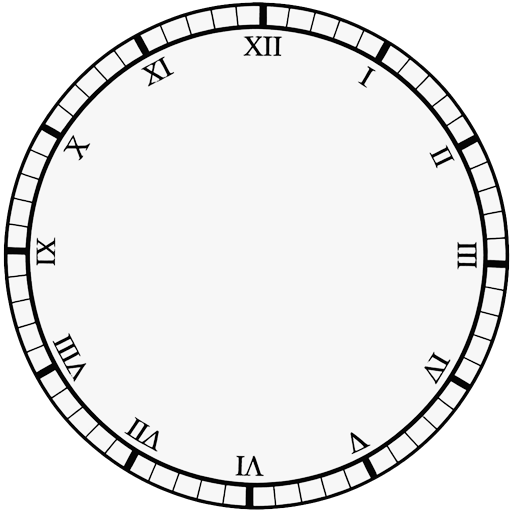

📜 遊戲日誌
- 點擊「開始新遊戲」，然後點擊「下一回合」翻開小時卡

資訊面板
小時卡庫
--
遊戲局次
--
當前回合
--
本回合出牌
🏆 積分
各角色出牌記錄

等待遊戲開始...
目標： 玩家利用「分鐘卡」競標鐘面「小時卡」的選擇順序，從而得到安全的小時位置，保護擁有的齒輪（分數）。
| 項目 | ⚔️ 3P 對抗模式 | ⚔️ 5P 扮演模式 |
|---|---|---|
| 玩家人數 及 遊戲局數(每局 12 回合) |
3 人 (時、分、秒針時魔)， 3 局遊戲 |
5 人 (3幼體時魔 vs 1時之惡 vs 1受詛者)， 5 局遊戲 |
| 角色狀態 | 直接扮演
進化形態 (擁有特殊能力) |
時魔由 幼體
開始 (需收集卡片進化) |
| 勝利條件 | 遊戲結束時 齒輪（分數）積分最高者勝 |
齒輪（分數）積分＋ 特殊條件 受詛者：必須在遊戲結束前於鐘面上保留 12 張`珍貴小時卡 時魔 特殊勝利：驅逐時之惡 時之惡 特殊勝利：遊戲結束前驅逐所有時魔各一次 |
幼體時魔收集到指定條件的小時卡後可成長為時、分、秒三種形態。
惡之牽引 (2 Mana)： 改變懲罰規則，處決距離自己最近的角色。
封鎖 (3 Mana)： 封印本回合所有特殊能力。
接觸鎖定： 踩上格子時，若有「珍貴小時卡」，將其鎖定。
勝利： 場上累積 12 張鎖定的珍貴卡。
被動： 每回合預知小時牌庫頂牌。
主動 (1 Mana)： 將牌庫頂的牌移至底部，每回合促可以 2 mana再執行一次。
主動 (2 Mana)： 取得小時卡後，可選擇順/逆時針跳躍至下一個有牌的格子。
主動 (3 Mana)： 出牌階段可蓋 2 張牌，待其他人翻牌後，再二選一打出。
被動 (3 Mana >)：整場遊戲一次，如果Mana >= 3 ，可以消耗所有Mana抵擋一次懲罰。
調整遊戲訊息顯示的快慢。設為 0 可瞬間顯示。
限制日誌清單保留最大數量，避免造成 DOM 過大。
調整下方手牌區域的卡片顯示順序。
Build Ver: 2026.02.24
BGM:
Maybe Peaceful Sound - MessySloth
Erokia ambient-wave-69
Yellowtree ambient-loop
SFX:
CLOCKTick - designerschoice,
Click6b - stijn,
Ambient Groove 002 - striptheband,
Clocking In Machine (1920) - PMBROWNE